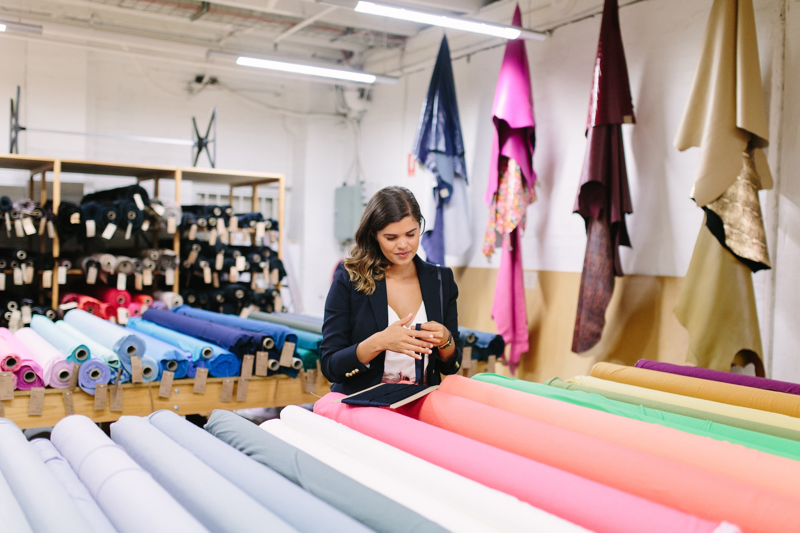
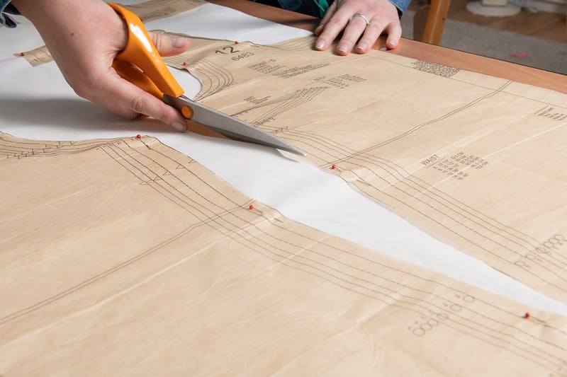
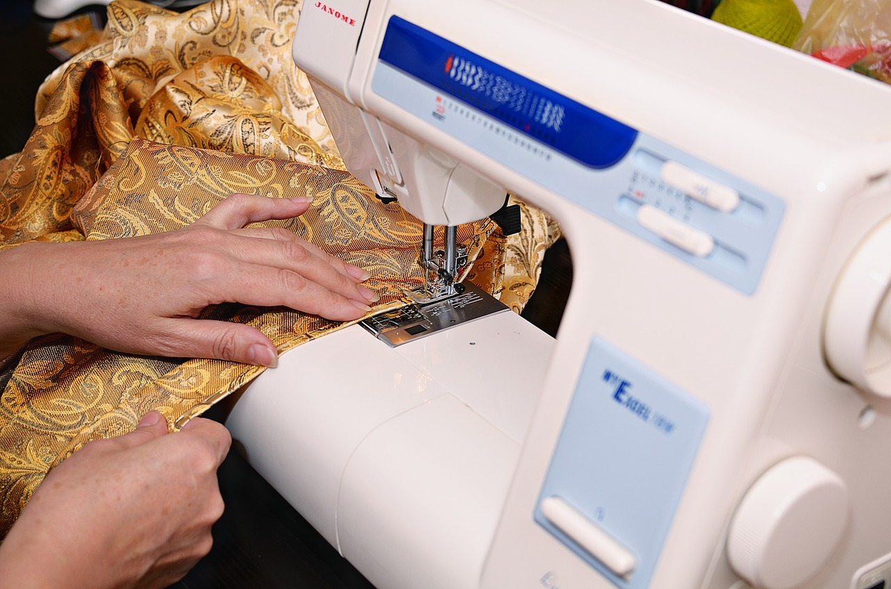

Learning How to Sew
  
Introduction
Sewing is a timeless craft that has evolved from a necessary skill for clothing production to a popular hobby and art form. It involves joining pieces of fabric together using thread and a needle, whether by hand or machine. From ancient hand-stitched garments to modern machine-made fashion, sewing has played a crucial role in human history. This versatile skill not only allows individuals to create and mend garments but also serves as a medium for expressing creativity and individuality.Tools and Materials
The tools and materials required for sewing are diverse and depend on the project. Essential tools include needles, thread, scissors, measuring tape, and a sewing machine. Advanced projects may require specialty items like rotary cutters, fabric glue, or sergers for finishing edges. Fabric choices vary widely, from cotton and silk to synthetic blends and leather, each with unique characteristics. Choosing the right tools and materials is critical for achieving a professional finish and ensuring the durability of the final product. Here are some common materials in a list format:- Fabric
- Sewing Machine
- Needle and Thread
- Pattern
- Notions
- Pins
- Chalk
- Buttons
Basic Techniques
Sewing begins with mastering basic techniques such as threading a needle, creating a knot, and sewing simple stitches like the running stitch and backstitch. For machine sewing, understanding how to set up the machine, adjust tension, and select appropriate stitches is vital. Beginners often start with straightforward projects like hemming pants or creating pillowcases. As skills develop, more complex techniques, such as pleating, gathering, and inserting zippers, can be explored, paving the way for intricate designs and tailored garments.This is a video that can take you through some of the basics!
Creative Possibilities
Sewing offers endless creative possibilities, ranging from fashion design to crafting home décor items. Individuals can design their own clothing, customize existing pieces, or make practical items like bags and quilts. Sewing also intersects with art, allowing for unique projects such as embroidered wall hangings or upcycled creations from repurposed fabrics. This creativity not only brings personal satisfaction but also contributes to sustainable living by reducing waste and promoting reuse.The Value of Sewing
Sewing is more than just a practical skill—it is a rewarding hobby that fosters creativity, problem-solving, and self-reliance. Whether it is used to repair a favorite garment, create a unique piece of clothing, or express artistic vision, sewing provides opportunities for growth and fulfillment. As the craft continues to gain popularity, it connects people to their heritage while offering a sustainable, customizable approach to fashion and design.Words courtesy of ChatGPT
And here's a Tableau Viz about bees!

Jump to Top